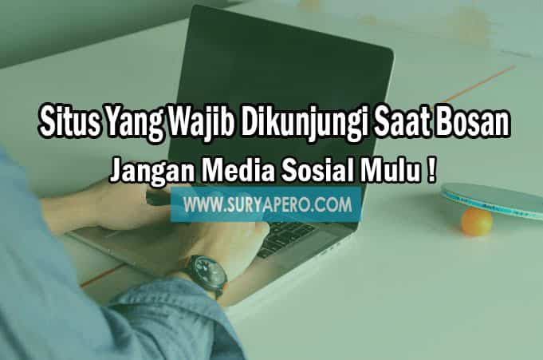

Flasdisk Vs DVD, Mana Yang Aman Menyimpan File ?

Baca Selanjutnya Sebagai pengguna pintar, anda harus memilih mana yang baik dan buruk, tidak semua di internet itu positif isinya. ada informasi negatif yang bisa mempengarui anak anda. bagi anda yang sudah sering menggunakan internet selama seharian atau bekerja di depan komputer, pasti merasa dampak besar yang anda dapatkan oleh internet. tetapi, mungkin anda pernah merasa bosan dengan kegiatan di media sosial salah satunya di facebook, twitter, dan lain-lain.
Rasa bosan merupakan sifat alami manusia yang di alami semua orang dalam kegiatan apapun. walaupun sudah bekerja dengan seharian penuh dan di lakukan berulang-ulang akan muncul rasa malas dan bosan. sama dengan media internet.
Untuk mengembalikan rasa bosan itu menjadi sesuatu yang bermanfaat anda bisa mengunjungi beberapa situs yang saya rekomendasikan di artikel ini. anda tidak ingin bukan, menghabiskan waktu luang anda dengan kegiatan yang tidak bermanfaat, seperti scroll halaman facebook yang memunculkan berita palsu maupun hiburan.
Terutama untuk pelajar, paling di khususkan mahasiswa yang mayoritas sudah menggunakan hp smartphone. hindari rasa bosan itu dengan kegiatan menambah ilmu atau yang berguna di sekitar anda.